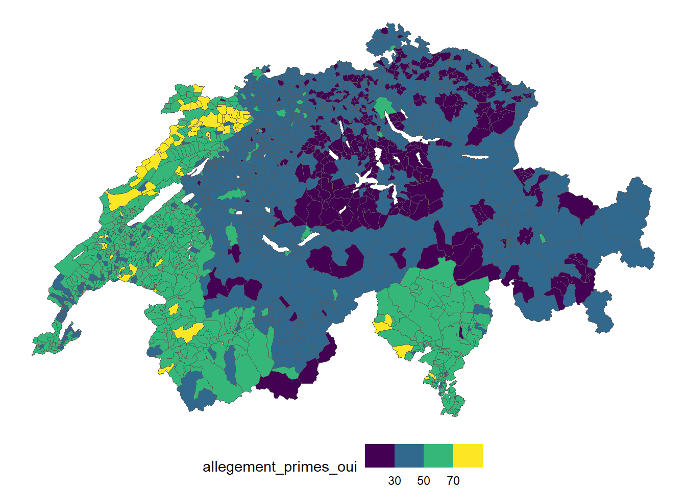
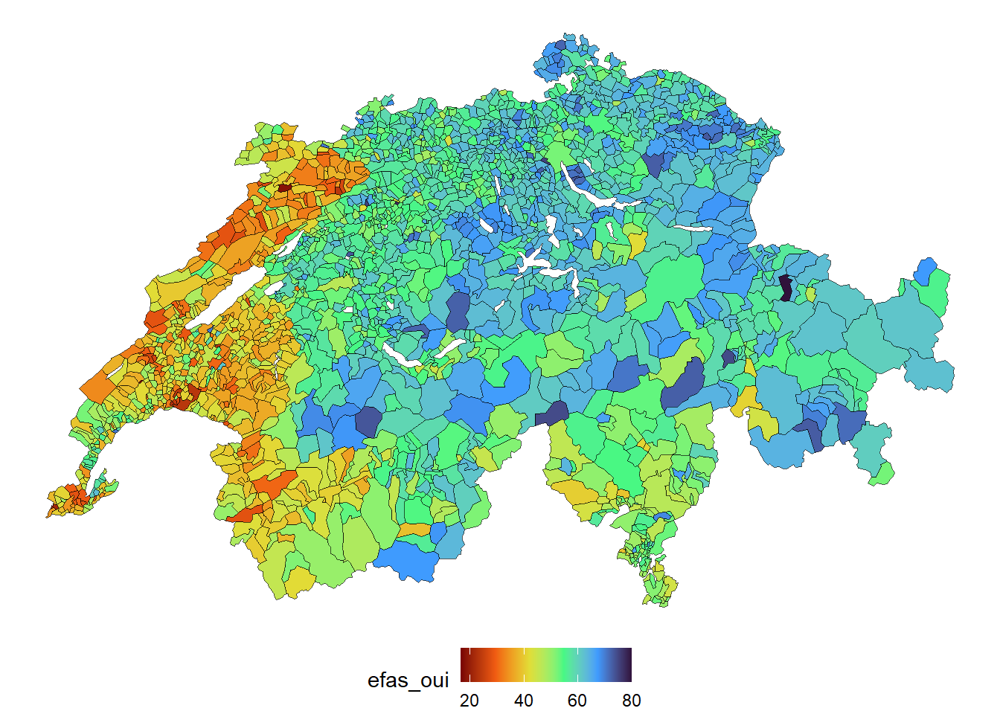
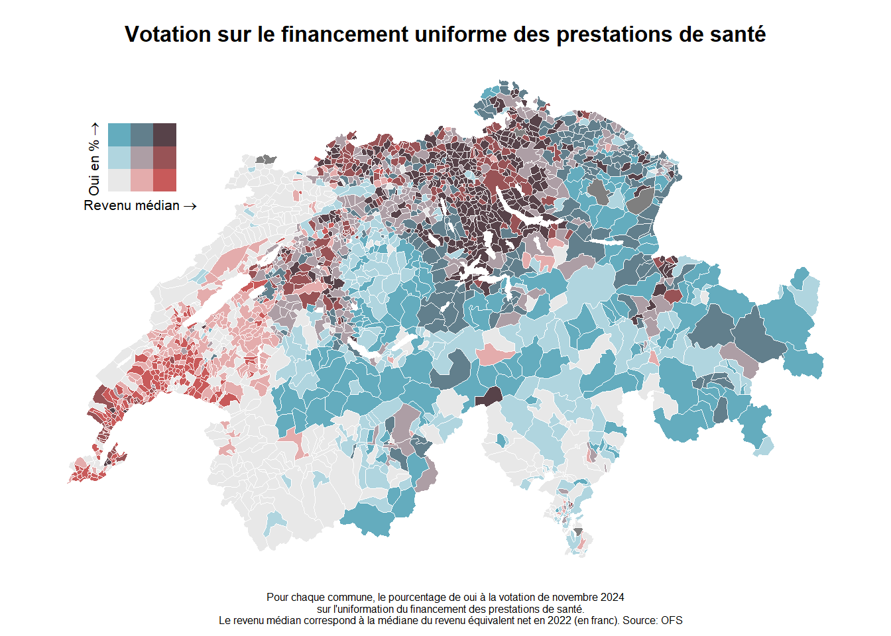

| Date | Votation | Résultat | % Oui |
|---|---|---|---|
| 30.07.1882 | Loi sur les épidémies | 0 | 21.10 |
| 26.10.1890 | Droit de légiférer sur l'assurance en cas d'accident et de maladie | 1 | 75.44 |
| 20.05.1900 | Loi sur l'assurance maladie, accidents et militaire | 0 | 30.21 |
| 04.02.1912 | Loi sur l'assurance en cas de maladie et d'accidents | 1 | 54.36 |
| 04.05.1913 | Lutte contre les maladies de l'homme et des animaux | 1 | 60.32 |
| 22.05.1949 | Loi sur la lutte contre la tuberculose | 0 | 24.85 |
| 08.12.1974 | Initiative «pour une meilleure assurance-maladie» | 0 | 26.71 |
| 08.12.1974 | Contre-projet à l'initiative «pour une meilleure assurance-maladie» | 0 | 31.84 |
| 10.03.1985 | Suppression de l'obligation de la Confédération d'allouer des subventions dans le domaine de la santé publique | 1 | 52.99 |
| 06.12.1987 | Loi sur l'assurance-maladie | 0 | 28.72 |
| 16.02.1992 | «Initiative des caisses-maladie» | 0 | 39.27 |
| 26.09.1993 | Mesures concernant l'assurance-maladie | 1 | 80.55 |
| 04.12.1994 | Loi sur l'assurance-maladie | 1 | 51.80 |
| 04.12.1994 | Initiative «pour une saine assurance-maladie» | 0 | 23.45 |
| 26.11.2000 | Initiative «pour des coûts hospitaliers moins élevés» | 0 | 17.89 |
| 09.02.2003 | Loi sur les participations cantonales aux coûts des traitements hospitaliers | 1 | 77.36 |
| 18.05.2003 | «Initiative-santé» | 0 | 27.09 |
| 11.03.2007 | Initiative pour une caisse maladie unique | 0 | 28.76 |
| 01.06.2008 | Article constitutionnel sur l'assurance-maladie | 0 | 30.52 |
| 17.05.2009 | Article constitutionnel sur les médecines complémentaires | 1 | 67.03 |
| 17.06.2012 | Loi sur l'assurance-maladie (Réseaux de soins) | 0 | 23.95 |
| 22.09.2013 | Loi sur les épidémies | 1 | 60.00 |
| 09.02.2014 | Initiative «Financer l'avortement est une affaire privée» | 0 | 30.18 |
| 18.05.2014 | Arrêté fédéral concernant les soins médicaux de base | 1 | 88.07 |
| 28.09.2014 | Initiative «Pour une caisse publique d'assurance-maladie» | 0 | 38.16 |
| 28.11.2021 | Initiative sur les soins infirmiers | 1 | 60.98 |
| 15.05.2022 | Principe du consentement présumé pour le don d’organes | 1 | 60.20 |
| 09.06.2024 | Initiative d’allègement des primes | 0 | 44.53 |
| 09.06.2024 | Initiative pour un frein aux coûts dans le système de santé | 0 | 37.23 |
| 24.11.2024 | Financement uniforme des prestations ambulatoires et stationnaires | 1 | 53.31 |
L’assurance-maladie obligatoire suisse dans l’impasse. Une analyse du compromis socio-politique derrière la Loi fédérale sur l’assurance maladie (LAMal)
Annexe
Swissvotes
Faits stylisés


TableGrob (1 x 2) "arrange": 2 grobs
z cells name grob
1 1 (1-1,1-1) arrange gtable[arrange]
2 2 (1-1,2-2) arrange gtable[layout]Votation



Selects panel 2023 Minimum franchise

term contrast estimate std.error statistic
1 W1_age dY/dX 0.0022513 0.0003614 6.230134
2 gender Female - Male 0.0643459 0.0127453 5.048586
3 income_adj_decile dY/dX -0.0073076 0.0021992 -3.322777
4 langue French - German 0.1016479 0.0147422 6.895040
5 langue Italian - German 0.0383673 0.0339924 1.128704
6 langue Romansh - German 0.0008723 0.1225458 0.007118
7 op_chances_foreigners dY/dX 0.0079703 0.0056184 1.418611
8 op_eu_integration dY/dX 0.0161729 0.0059711 2.708539
9 op_gender_equality dY/dX 0.0144327 0.0076303 1.891492
10 op_incr_retirementAge dY/dX -0.0737416 0.0066295 -11.123304
11 op_limit_immigration dY/dX -0.0180541 0.0066626 -2.709780
12 op_min_wage dY/dX 0.0324298 0.0073409 4.417698
13 op_protec_env dY/dX -0.0267420 0.0076419 -3.499371
14 op_social_expenses dY/dX 0.0340804 0.0075076 4.539435
15 op_taxes_high_income dY/dX -0.0155851 0.0071131 -2.191046
16 probs_vote_centre dY/dX -0.0062041 0.0022181 -2.797053
17 probs_vote_ps dY/dX 0.0105701 0.0026520 3.985724
18 probs_vote_verts dY/dX -0.0052556 0.0030243 -1.737796
19 probs_vote_vertsliberaux dY/dX -0.0080127 0.0024840 -3.225756
p.value s.value conf.low conf.high stars
1 0.00000000046603548756299898983731 30.998841 0.0015430 0.0029595 ***
2 0.00000044509095322721832178533563 21.099396 0.0393655 0.0893262 ***
3 0.00089126090112349575650396715787 10.131865 -0.0116180 -0.0029971 ***
4 0.00000000000538496019940243452959 37.434201 0.0727538 0.1305421 ***
5 0.25902287685203823075497098216147 1.948849 -0.0282565 0.1049911
6 0.99432076993227180849999058409594 0.008217 -0.2393132 0.2410577
7 0.15601257932044682030792159821431 2.680266 -0.0030415 0.0189821
8 0.00675801344899762315016067404372 7.209185 0.0044698 0.0278760 **
9 0.05855867110291087390683273383729 4.093973 -0.0005225 0.0293878 +
10 0.00000000000000000000000000009663 93.063495 -0.0867351 -0.0607481 ***
11 0.00673279510434393081708126516105 7.214579 -0.0311126 -0.0049957 **
12 0.00000997574730722544356347619710 16.613144 0.0180420 0.0468177 ***
13 0.00046635765603356826988420968938 11.066276 -0.0417199 -0.0117640 ***
14 0.00000564052851633623071559917039 17.435738 0.0193657 0.0487951 ***
15 0.02844843249909059443303327441299 5.135507 -0.0295264 -0.0016437 *
16 0.00515710179161582311230249686673 7.599224 -0.0105514 -0.0018567 **
17 0.00006727465718863643001201174654 13.859577 0.0053723 0.0157679 ***
18 0.08224672157051619858503244131498 3.603898 -0.0111831 0.0006719 +
19 0.00125640321389638835204716205141 9.636485 -0.0128812 -0.0031442 **
AIC AICc BIC R2_Tjur RMSE Sigma Log_loss Score_log PCP
1 7951 7951 8086 0.1036 0.4689 1 0.6298 -Inf 0.5601
2 7951 7951 8086 0.1036 0.4689 1 0.6298 -Inf 0.5601
3 7951 7951 8086 0.1036 0.4689 1 0.6298 -Inf 0.5601
4 7951 7951 8086 0.1036 0.4689 1 0.6298 -Inf 0.5601
5 7951 7951 8086 0.1036 0.4689 1 0.6298 -Inf 0.5601
6 7951 7951 8086 0.1036 0.4689 1 0.6298 -Inf 0.5601
7 7951 7951 8086 0.1036 0.4689 1 0.6298 -Inf 0.5601
8 7951 7951 8086 0.1036 0.4689 1 0.6298 -Inf 0.5601
9 7951 7951 8086 0.1036 0.4689 1 0.6298 -Inf 0.5601
10 7951 7951 8086 0.1036 0.4689 1 0.6298 -Inf 0.5601
11 7951 7951 8086 0.1036 0.4689 1 0.6298 -Inf 0.5601
12 7951 7951 8086 0.1036 0.4689 1 0.6298 -Inf 0.5601
13 7951 7951 8086 0.1036 0.4689 1 0.6298 -Inf 0.5601
14 7951 7951 8086 0.1036 0.4689 1 0.6298 -Inf 0.5601
15 7951 7951 8086 0.1036 0.4689 1 0.6298 -Inf 0.5601
16 7951 7951 8086 0.1036 0.4689 1 0.6298 -Inf 0.5601
17 7951 7951 8086 0.1036 0.4689 1 0.6298 -Inf 0.5601
18 7951 7951 8086 0.1036 0.4689 1 0.6298 -Inf 0.5601
19 7951 7951 8086 0.1036 0.4689 1 0.6298 -Inf 0.5601| Résultats: opinion sur l'augmentation de la franchise minimum | |||||||
| Effets et contrastes marginaux moyens prédits par le modèle | |||||||
| term | contrast | estimate | statistic | p.value | s.value | conf.low | conf.high |
|---|---|---|---|---|---|---|---|
| W1_age | dY/dX | 0.0023*** (0.0004) |
6.2301 | 0.0000 | 30.9988 | 0.0015 | 0.0030 |
| gender | Female - Male | 0.0643*** (0.0127) |
5.0486 | 0.0000 | 21.0994 | 0.0394 | 0.0893 |
| income_adj_decile | dY/dX | −0.0073*** (0.0022) |
−3.3228 | 0.0009 | 10.1319 | −0.0116 | −0.0030 |
| langue | French - German | 0.1016*** (0.0147) |
6.8950 | 0.0000 | 37.4342 | 0.0728 | 0.1305 |
| langue | Italian - German | 0.0384 (0.0340) |
1.1287 | 0.2590 | 1.9488 | −0.0283 | 0.1050 |
| langue | Romansh - German | 0.0009 (0.1225) |
0.0071 | 0.9943 | 0.0082 | −0.2393 | 0.2411 |
| op_chances_foreigners | dY/dX | 0.0080 (0.0056) |
1.4186 | 0.1560 | 2.6803 | −0.0030 | 0.0190 |
| op_eu_integration | dY/dX | 0.0162** (0.0060) |
2.7085 | 0.0068 | 7.2092 | 0.0045 | 0.0279 |
| op_gender_equality | dY/dX | 0.0144+ (0.0076) |
1.8915 | 0.0586 | 4.0940 | −0.0005 | 0.0294 |
| op_incr_retirementAge | dY/dX | −0.0737*** (0.0066) |
−11.1233 | 0.0000 | 93.0635 | −0.0867 | −0.0607 |
| op_limit_immigration | dY/dX | −0.0181** (0.0067) |
−2.7098 | 0.0067 | 7.2146 | −0.0311 | −0.0050 |
| op_min_wage | dY/dX | 0.0324*** (0.0073) |
4.4177 | 0.0000 | 16.6131 | 0.0180 | 0.0468 |
| op_protec_env | dY/dX | −0.0267*** (0.0076) |
−3.4994 | 0.0005 | 11.0663 | −0.0417 | −0.0118 |
| op_social_expenses | dY/dX | 0.0341*** (0.0075) |
4.5394 | 0.0000 | 17.4357 | 0.0194 | 0.0488 |
| op_taxes_high_income | dY/dX | −0.0156* (0.0071) |
−2.1910 | 0.0284 | 5.1355 | −0.0295 | −0.0016 |
| probs_vote_centre | dY/dX | −0.0062** (0.0022) |
−2.7971 | 0.0052 | 7.5992 | −0.0106 | −0.0019 |
| probs_vote_ps | dY/dX | 0.0106*** (0.0027) |
3.9857 | 0.0001 | 13.8596 | 0.0054 | 0.0158 |
| probs_vote_verts | dY/dX | −0.0053+ (0.0030) |
−1.7378 | 0.0822 | 3.6039 | −0.0112 | 0.0007 |
| probs_vote_vertsliberaux | dY/dX | −0.0080** (0.0025) |
−3.2258 | 0.0013 | 9.6365 | −0.0129 | −0.0031 |
| R² Tjur = 0.104 RMSE = 0.469 N = 6280 |
|||||||
| + p < 0.10, * p < 0.05, ** p < 0.01, *** p < 0.01 | |||||||
Selects Panel Wave 4 (Premium relief initiative)
| Résultats: vote sur l'initiative d'allègement des primes | |||||||
| Effets et contrastes marginaux moyens prédits par le modèle | |||||||
| term | contrast | estimate | statistic | p.value | s.value | conf.low | conf.high |
|---|---|---|---|---|---|---|---|
| Âge | dY/dX | 0.0025*** (0.0007) |
3.4519 | 0.0006 | 10.8109 | 0.0011 | 0.0039 |
| Catégorie socio-professionnelle | Retired - Business and administration professionals | 0.1066*** (0.0267) |
3.9861 | 0.0001 | 13.8622 | 0.0542 | 0.1590 |
| Genre | Female - Male | −0.0700*** (0.0162) |
−4.3316 | 0.0000 | 16.0439 | −0.1016 | −0.0383 |
| Décile du revenu ajusté du ménage | dY/dX | −0.0233*** (0.0029) |
−7.9032 | 0.0000 | 48.3860 | −0.0290 | −0.0175 |
| Langue | French - German | 0.0970*** (0.0217) |
4.4702 | 0.0000 | 16.9656 | 0.0545 | 0.1396 |
| Langue | Italian - German | 0.1798*** (0.0433) |
4.1504 | 0.0000 | 14.8789 | 0.0949 | 0.2647 |
| Auto-positionnement gauche-droite | dY/dX | −0.0143** (0.0050) |
−2.8674 | 0.0041 | 7.9167 | −0.0241 | −0.0045 |
| Opinion: Trop de préoccupation pour l'environnement par rapport aux coûts et aux prix | dY/dX | 0.0176* (0.0081) |
2.1713 | 0.0299 | 5.0632 | 0.0017 | 0.0335 |
| Opinion: pour le droit de vote aux étrangers | dY/dX | 0.0305** (0.0096) |
3.1709 | 0.0015 | 9.3618 | 0.0117 | 0.0494 |
| Opinion: augmenter l'âge du départ à la retraite | dY/dX | −0.0240* (0.0094) |
−2.5618 | 0.0104 | 6.5854 | −0.0423 | −0.0056 |
| Opinion: augmenter le salaire minimum | dY/dX | 0.0631*** (0.0097) |
6.5353 | 0.0000 | 33.8746 | 0.0442 | 0.0821 |
| Opinion: État vs marché et concurrence | dY/dX | −0.0498*** (0.0093) |
−5.3310 | 0.0000 | 23.2878 | −0.0681 | −0.0315 |
| Vote si élections ce dimanche | GLP/PVL - Green Liberal Party - FDP/PLR - Liberal Radical Party | 0.0100 (0.0374) |
0.2674 | 0.7892 | 0.3415 | −0.0633 | 0.0833 |
| Vote si élections ce dimanche | GPS/PES - Green Party - FDP/PLR - Liberal Radical Party | 0.1338** (0.0437) |
3.0627 | 0.0022 | 8.8326 | 0.0482 | 0.2194 |
| Vote si élections ce dimanche | Other party, several/all parties - FDP/PLR - Liberal Radical Party | 0.1023* (0.0445) |
2.2967 | 0.0216 | 5.5305 | 0.0150 | 0.1895 |
| Vote si élections ce dimanche | SP/PS - Social Democratic Party - FDP/PLR - Liberal Radical Party | 0.1620*** (0.0366) |
4.4273 | 0.0000 | 16.6770 | 0.0903 | 0.2337 |
| Vote si élections ce dimanche | SVP/UDC - Swiss People's Party - FDP/PLR - Liberal Radical Party | 0.0258 (0.0307) |
0.8378 | 0.4021 | 1.3142 | −0.0345 | 0.0860 |
| Vote si élections ce dimanche | The Centre (former CVP/ BDP) - FDP/PLR - Liberal Radical Party | −0.0107 (0.0307) |
−0.3498 | 0.7265 | 0.4610 | −0.0708 | 0.0494 |
| R² Tjur = 0.229 RMSE = 0.432 N = 6280 |
|||||||
| + p < 0.10, * p < 0.05, ** p < 0.01, *** p < 0.01 | |||||||